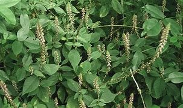

Basonym of Drug
Apamarga
Main Synonym
- Pratyakpushpa
- Kharamanjari
Regional Name
- Bengali: Apamg
- English: Prickly Chaff Flower
- Gujarati: Aghedo
- Hindi: Chirchita, Latjira
- Kannada: Uttarani
- Malayalam: Katalati
- Marathi: Aghada
- Punjabi: Puthakanda
- Tamil: Nayuruvi
- Telugu: Uttarenu
- Urdu: Chirchita
Botanical Name
Achyranthes aspera Linn
Family
Amaranthaceae
Classification (Gana)
- Aacharya Charak: Shirovirechana, Krimighna, Vamanopaga
- Aacharya Sushrut: Arkadi
External Morphology
A stiff, erect, 0.3-0.9 m high herb
Useful Parts
- Root
- Seeds
- Leaves
- Whole plant
Important Phytoconstituent
Rasa Panchak
- Rasa: Katu, Tikta
- Guna: Sara, Laghu, Ruksha, Tikshna
- Virya: Ushna
- Vipaka: Katu
Action
- Kaphavatashamak (Balances Kapha and Vata doshas)
- Deepana (Increases Digestive fire)
- Medohara (Decreases Fat)
- Shirovirechan (Useful in Nasya)
- Krimighna (Anthelmentic)
Therapeutic Indication
- Aruchi (Anorexia)
- Kasa (Cough)
- Udararoga (Abdominal diseases)
- Kandu (Itching)
Therapeutic Uses
- In earache, oil processed with its alkali is filled in the ear.
- For nasya, its seed powder is used.
- In cough, its alkali is given orally.
- In skin diseases, its root paste is applied locally.
Dose
- Juice: 10-20 ml
- Alkali: 1/2-2 gm
Formulations
- Apamarga Kshara
- Apamargakshartaila
- Gudapippali
- Jyotishamati Taila
Adverse Effect
Not Reported